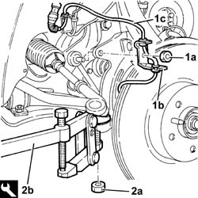
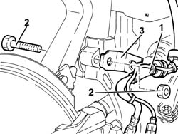
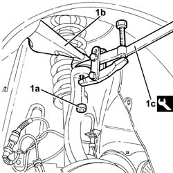
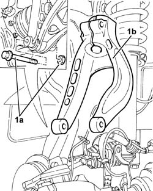

4410A80 damper lower fork - r r
- Path
- Procedures > 44 SUSPENSION AND WHEELS > 4410 FRONT SUSPENSION > 4410A front dampers and springs > 4410A80 damper lower fork - r r
- Kind
- repair procedure (removal / refitting; the operation number is the code)
- Applies to
- all engines; all production periods
- Interactive page
- https://sloeber94.github.io/elrnDB-a156/en/#/3238181
Applies to: all engines; all production periods
 Removing
Removing
 Refitting
RefittingPosition the vehicle on the ramp.
4450B10 Front WHEEL (one) - R.R.
7055B64 Engine compartment DUST shield in front wheel arch (one), left or right - R.R.
1. Unscrew nut (1a) securing the anti-roll bar joint to the lower fork and the bracket (1b) supporting ABS active sensor wiring (1c).
2. Undo the nut (2a) and disconnect the power steering box rod from the steering knuckle using the tool (2b).
 | Name | Country |
|---|---|---|
2b | Extractor | 1.821.169.000 |

Applies to: all engines; all production periods
1. Disconnect the brake pipes from the support plate.
2. Undo the bolt securing the front suspension lower damper connection fork to the lower wishbone.
3. Remove the brake pipe mounting plate.

Applies to: all engines; all production periods
1. Undo nut (1a) and disconnect upper wishbone (1b) from the wheel strut using tool (1c).
| Name | Country |
|---|---|---|
1c | Extractor | 1.821.169.000 |

Applies to: all engines; all production periods
1. Undo bolt (1a) and remove the lower fork connecting the front suspension damper to lower wishbone (1b).

Applies to: all engines; all production periods
Refitting
RemovingRefit the lower fork in its seating and secure it to the lower wishbone, tightening the bolt to torque.
 | Fastening | Component | Ø | Value (daNm) |
|---|---|---|---|---|
- | Bolt | FRONT DAMPER FORK ON WISHBONE | M12 | (Lower track control arm side) 10.8 ÷ 13.2 |
Connect the upper wishbone to the wheel strut and secure by tightening the nut to the specified torque.
| Fastening | Component | Ø | Value (daNm) |
|---|---|---|---|---|
- | Nut | FRONT SUSPENSION TOP LEVER | M10 | 4.3 - 4.7 |
Refit in its seating the brake pipe mounting bracket, then tighten the bolt on securing the lower fork to the shock absorber to torque.
| Fastening | Component | Ø | Value (daNm) |
|---|---|---|---|---|
- | Bolt | FRONT DAMPER FORK ON WISHBONE | M12 | 8.1 - 8.9 |
Connect the brake pipe to the mounting bracket.
Connect the power steering box rod to the steering knuckle and secure it tightening the nut to torque.
| Fastening | Component | Ø | Value (daNm) |
|---|---|---|---|---|
- | Nut | ADJUSTABLE STEERING LINKS | M14 | 2.9 - 3.6 |
Refit the ABS active sensor wiring bracket, then tighten the nut securing the joint between the anti-roll bar and lower fork to torque.
| Fastening | Component | Ø | Value (daNm) |
|---|---|---|---|---|
- | Nut | FRONT ANTI-ROLL BAR JOINTS | M10 | 3.8 - 4.7 |
7055B64 Engine compartment DUST shield in front wheel arch (one), left or right - R.R.
4450B10 Front WHEEL (one) - R.R.
Remove the car from the ramp.
Check and if necessary adjust the wheel geometry values 4450A10 front wheel geometry - check using optical equipment - includes front wheel tow-in adjustment if necessary .
Topics linked from this page (3)
- 4450A10 front wheel geometry - check using optical equipment - includes front wheel tow-in adjustment if necessary
- 4450B10 Front WHEEL (one) - R.R.
- 7055B64 Engine compartment DUST shield in front wheel arch (one), left or right - R.R.
Topics that link to this page (13)
- 1008C19 engine link mount - r r
- 2110D53 left hand flange on differential - r+r
- 2110D56 right hand flange on differential - r+r
- 2110D63 rh differential shaft oil seal - r r
- 2110D64 DIFFERENTIAL LEFT SHAFT OIL SEAL - R.R.
- 2110D74 differential l/h inner drive shaft - r + r
- 2710A10 drive shaft with joints (one), l/h or r/h - r + r
- 2710A31 intermediate drive shaft - r r
- 2710A35 intermediate drive shaft mount - r r
- 4410A10 l/h or r/h front suspension spring/damper unit (one) - r+r - check wheel geometry separately if necessary
- 4410A12 front suspension damper (one), lh or rh - for mcpherson strut system - includes dismantling/re-building of assembly at bench r r
- 4410A84 damper lower fork - r r
- 4410B68 lower swinging arm(one), lh or rh of front suspension - r r -check wheel alignment separately